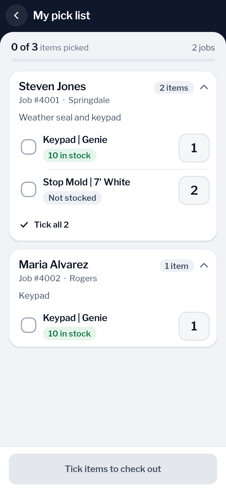
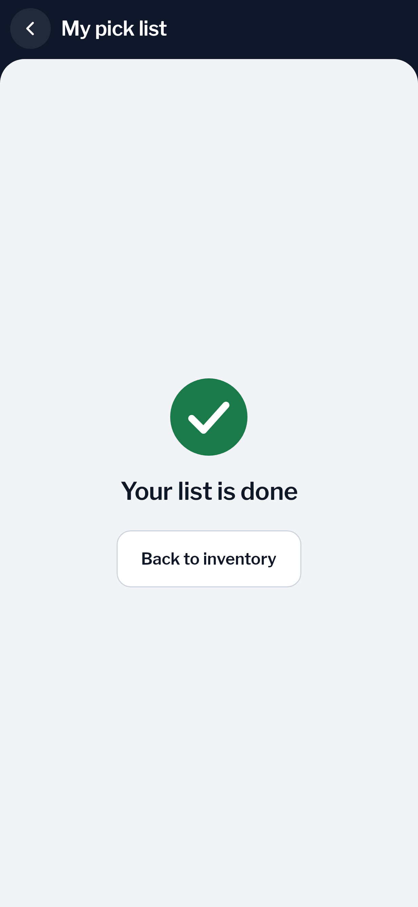
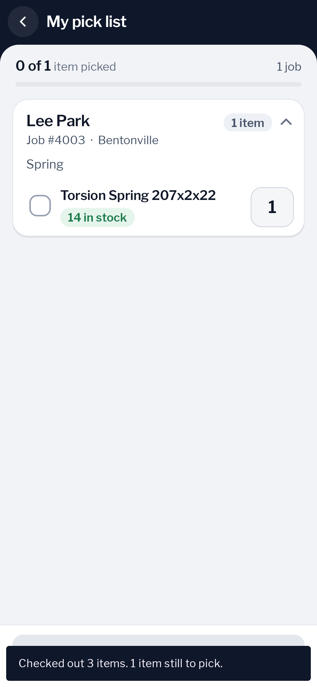

Where things stand
Decisions waiting on you
- Approve R1b for release with R1, or keep both on hold.
- Approve each of the seven name mappings (or the broader match-by-product approach for Phase 2).
- Review the strike SQL, then run it in pgAdmin.
- Send the list of people who use the warehouse phone.
Nothing has been committed, pushed, deployed or published. No Sheet or production writes. The original audit is index.html.
R1 release hold: findings, proposal, deployment and rollback
19 Nov 2026. Nothing was deployed, committed, pushed or installed. Production reads only (Render logs, read-only SQL). R1 = commit 983535d7 on origin/stock-phase1, a single commit directly on top of the live commit 030f3b90.
1. What the installed Android builds do with status: "partial"
The builds that can be on phones today, read from git:
| Build | Commit | After any HTTP 200 checkout the phone shows | Reads status / lines / message? |
|---|---|---|---|
| versionCode 33 ("old app") | 1fe6546 | Toast "Checkout Successful!" | No |
| versionCode 34 (pushed 11-09/11-10) | 23140f7, 6ce02a4, 551c61b | Snackbar "Checked out N items. M still to pick.", or the "Your list is done" panel when nothing is left | Only message, and only to spot the "Items staged" prefix |
| versionCode 36 | local, uncommitted | Same as 34 (pick list unchanged) | Same |
Verified on unchanged build 34 (551c61b) with its own Robolectric harness: a scratch test, never committed, fed it the exact answer the real R1 router returns for a mixed checkout. Evidence is in r1-hold-evidence/.
- Lines:
Stop Mold | 7' White×2 (job 4001),Keypad | Genie×1 (job 4001),Keypad | Genie×1 (job 4002). - R1 answer:
{"status":"partial","itemsUpdated":2,"lines":[{"outcome":"not_stocked",…},{"outcome":"deducted","remaining":8},…],"message":"1 of 3 lines did not come off stock: Stop Mold | 7' White."} - The Sheet afterwards: Keypad 10 → 8 (correct, both jobs). Weather Seal | Stop Mold | 7' White stays at 60. All three lines are logged to PickedItems, as before R1.
- What the employee sees: before checkout, the Stop Mold row carries a grey "Not stocked" chip, the same chip a door or service line gets (
r1_A1_before.png). After checkout, "Your list is done" (r1_A2_after.png), or "Checked out 3 items. 1 item still to pick." when another job is left (r1_B_after.png). Stop Mold is never mentioned again.
2. Can an employee mistake a partial checkout for a full one?
Yes, on every installed build. Nothing on screen differs between a full and a partial checkout. The unmatched line also leaves the pick list, because it is logged to PickedItems like any other line.
This is not a regression from R1: production today answers "status":"success" for the same checkout and the phone shows the same words. R1 makes the server's answer truthful (partial, per-line outcomes) for builds that read it. It changes nothing on the screens of the builds people have now.
3. Mixed matched and unmatched lines, tested
| Test | Where | Result |
|---|---|---|
| Real R1 router, Stop Mold ×2 + Keypad ×1 on two jobs | r1-hold-evidence/mixed_checkout.js → mixed_checkout_out.txt | HTTP 200, partial, itemsUpdated 2, Keypad 10 → 8, Weather Seal unchanged at 60, 3 log rows |
| R1 unit test "C1: a line that matches no Inventory row is returned as an exception" | test/stock_writes.test.js | Pass |
| Build 34 screen fed that answer (2 scenarios) | r1-hold-evidence/R1PartialCheckoutTest.kt, android_build34_screen_text.txt, 3 PNGs | Shows success wording; no exception shown |
4. Stop Mold
- In the audit snapshot, the Service Fusion name
Stop Mold | 7' Whitehas no Sheet row. The shelf part isWeather Seal | Stop Mold | 7' White(missed 9 times, 18 units, latest 18 Nov). Six more near-miss names are listed in the audit (C1). - Today the employee is not told clearly. Build 34 says "Not stocked", which reads like "a part with no shelf" (doors, services), not "this IS on the shelf under another name and nothing came off stock". Build 33 says nothing at all.
- The cause is the name, and only an alias mapping fixes it (decision D7: approve the 7 aliases from the audit, or wait for Phase 2 id matching). Until then, communication can only tell people about it, not fix it.
5. Proposal (the current builds cannot display the exceptions)
A. Backward-compatible, server only, works on builds 33 and 34 today: a push notification on a partial checkout. Both builds already display FCM messages that carry a title and body (MyFcmService.kt); the 4 PM "Inventory Overdue" alert uses that path.
- When a checkout has a line that is
unreadable, ornot_stockedand looks like a stocked part, the server sends the signed-in person a push: title "⚠️ Not taken off stock", body "Stop Mold | 7' White (job 4001) isn't on the stock sheet under that name, so nothing came off stock for it. Tell the office." - "Looks like a stocked part": every word of the line's name appears in exactly one Sheet part name. That catches Stop Mold and the audit's other near-misses, and skips doors and service lines. Most of the 142 unmatched log rows are those, and pushing for each would teach people to ignore the alerts.
- The same lines go to the server log with a 🚨 marker, so the office sees them as well.
- Limits: best effort (needs the device's FCM token; arrives a second after the "Checked out" message); build 33 shows one line of text. It does not stop the line leaving the pick list.
- Size: about half a day. It is a change to R1, so it needs your approval as "R1b" before release.
B. In the Android release plan (next build, S11): show the exceptions on the phone.
- Read
statusandlines. Onpartial, show a dialog before "Checked out…" or "Your list is done", listing each line that did not come off stock with its reason, and "Tell the office". - Separate "not on the stock sheet under this name" (a likely mapping problem) from genuine "Not stocked" service lines, using a new optional field from
/get_job_materials. Older builds ignore it. - Never show "Your list is done" after a partial checkout.
My recommendation: release R1 (it fixes daily stock loss, N1 and C2, and is no worse on screen than today), with A as R1b if you approve it, B in the next Android build, and decide D7 so Stop Mold stops being a mismatch at all. If you'd rather not add A, R1 alone is still safe to release.
6. Exact deployment and rollback procedure for R1 (to run only after your separate release approval)
Before
git fetch originand confirmorigin/mainis still030f3b906f115aeb017b00d817c968022b8a0806. R1 must be a fast-forward; if main has moved, stop and rebase R1 for a new review.- On a clean checkout of
983535d7:npm ci && node --test test/*.test.js. Expected: every stock test passes; the only failures are the known environment ones listed inr2-evidence/failures_R1.txt. - Note the live deploy for rollback:
dep-dbuu7itg1s2s739ipe30(commit030f3b90, live since 2026-11-18 17:44 UTC). - Pick the window: a weekday between 10:00 and 15:30 Chicago, or after 16:10. Not 08:00–08:35: warehouse staging is held in memory, so a deploy before 8:31 drops staged picks (H4). Not 15:50–16:05: two servers overlap for about a minute during a deploy and both would run the 4 PM audit (N3).
Deploy
git push origin 983535d7:main(fast-forward). Render auto-deploys in about a minute.
Verify (read-only)
- Render: the new deploy is
live; start-up log shows✅ Server live on port 3000and noTOKEN_SECRET is not setline. GET /get_full_inventoryanswers 200 (the office Stock Levels page loads).- On the next real checkout: the log shows no
❌ Checkout: Inventory!D… is not a numberlines (or, if it does, that cell really is text), the Sheet's D cells for the parts taken are plain numbers, and PickedItems has one row per line as before. - Next morning at 8:31:
🎉 Flushed and processed N staged items.once per server, and the staged parts' D values drop by the full staged amount.
Rollback (no schema, no data to undo)
- Fastest: Render dashboard → the service → Deploys →
dep-dbuu7itg1s2s739ipe30→ Rollback. Then also rungit revert 983535d7 && git push origin main, because the next push to main would otherwise redeploy R1. - Values R1 wrote stay correct numbers on the Sheet. After a rollback the old
parseIntbugs (C2, N1) come back.






Source file: r1-release-hold.md
R1b: push notification for likely stocked-part name mismatches
19 Nov 2026. Approved for local implementation and testing only. Not committed, pushed or deployed; R1 stays on release hold.
What it does
After a checkout answers, the server looks at the lines that took nothing off stock (not_stocked). For each one that is probably a stocked part under another name, it logs it for the office and pushes one notification to the signed-in person's phone, through the existing channel (admin.messaging().send, the same FCM path and display as the 4 PM "Inventory Overdue" alert; both builds 33 and 34 show it).
Example (the real text):
⚠️ Not taken off stock
1 part was not taken off stock: "Stop Mold | 7' White" (job 4001) looks like "Weather Seal | Stop Mold | 7' White" on the stock sheet
(part 0650732, shelf BD). Tell the office so the names can be matched; the rest of your checkout went through.
With several lines it lists three and says "And N more". The office log gets one 🧩 Likely name mismatch… line per item, with the job, quantity, Sheet row, part number and who checked it out.
The rule (src/stockMismatch.js)
A not_stocked line counts only if exactly one Sheet row matches. A row matches when, after normalising (lower case, split on | , () and spaces, "×" read as "x", plural to singular, "Taxable" and "&" ignored):
- every word of the line is in the row's name, and the line has at least 3 words, or
- every word of the row is in the line, the row has at least 3 words, and the line has at most 2 extra words.
No match, or more than one: no push. An exact name never gets here (it came off stock).
Requirements, and how each was met
| Requirement | How | Test |
|---|---|---|
| Use the existing notification channel | admin.messaging().send({ notification: { title, body }, token }) with the token from services.getTechToken (the 4 PM alert's path) | router tests check the exact message and token |
| No notice for doors, services, ordinary non-stock lines | Rule above. Run over every distinct job line name in production (3,537 names, 30,729 job lines; read-only, 19 Nov): of the 3,425 without an exact Sheet row, 170 are flagged and none is a door, service, labour line or fee | "every production job line name: nothing that reads as a door, service…"; synthetic doors/services/"Stop Mold | Install New Standard Color"; mixed checkout with a door and a tune-up line |
| Include the unmatched name and enough to resolve it | Line name, job number, the Sheet row's exact name, its part number and shelf, and "tell the office" | message text test |
| Mixed checkouts | Stop Mold + Keypad on two jobs + a door + a service line → one push naming only Stop Mold; stock and answer unchanged | "mixed checkout…" |
| False positives | Exact name, two candidate rows, too few words: no push; the flagged set is pinned to a reviewed list (below) | four tests |
| No duplicate notice on a retry | Fingerprint = person + Chicago day + the unmatched lines (job, name, qty), claimed once for 12 h. R1b alone: in this server's memory. R2: claimed in Postgres (stock_job_runs, key mismatch_notice:<fingerprint>), so it also holds across servers; a retry replayed by its request id never runs the notice at all | "same checkout sent again", "replayed by its Idempotency-Key" (R2), "two servers" (R2, memory store and real Postgres) |
| Never break a checkout | Sent after the answer, not awaited; token lookup or FCM failure only logged | "no phone registered, or the push service down" |
| Warehouse staging | Staging reads no stock, so the names are checked against the cached Sheet when staged (the person is there), and the 8:31 flush doesn't notify again | "warehouse staging before 8:31" |
False positives found, and what they mean
The 170 flagged names, each checked against Service Fusion's own link (product) on its job lines (full list: test/fixtures/stock_mismatch_flagged_2026-11-19.json, pinned by a test so the rule can't drift unnoticed):
- 85: SF's product is that Sheet row. Correct.
- 73: older lines with no product link. Name-only evidence; the review found one clearly wrong:
16' Bottom Seal→ "Weather Seal | Aluminum Bottom Seal Retainer | 16'" (a seal is not its retainer). Its last use was 2021. - 12: SF's product names something else. 5 are the same item spelled differently (e.g. "Operator Parts |" vs "Operator Rail |", a double space, the pusher spring's "QUIET"). 2 are
Lubricant | Garage Lube/Lubricant | Clopay Garage Lube→ the Sheet's "Clopay Heavy Duty Garage Door Lube | 12 Pack 20 oz." row (probably the same stock, counted by the pack). 5 are doubtful:Stop Mold | 7' Iron Oreand16' Iron Ore(SF product says Gray),Stop Mold | 8' Walnut Finish(SF says 9'),7' 81550 Operator Belt & Rail(SF says Chain & Rail), andChain Drive | 12' TDC7S1BMC L5(SF says T501). Each was used once or twice in 2026.
That is why the push says "looks like" and asks the person to tell the office: it never changes stock, it only asks for a check. A wrong suggestion costs a short conversation; a missed one is today's silent stock loss.
Limits
- Best effort: no FCM token for that login means no push (logged). The push arrives just after the phone's own "Checked out" message, which still says nothing about the miss on builds 33 and 34.
- R1b alone dedupes in each server's memory. A retry that lands on the other server during the minute-long deploy overlap can notify twice. R2 closes this.
- Build 33 shows one line of the text; build 34 shows it all (BigTextStyle).
- The match uses the Sheet as read for the checkout (normal checkout) or the cached copy (staging, at most the cache's age).
Test results
| Where | Result |
|---|---|
R2 tree, stock_mismatch.test.js | 18 / 18 pass |
R2 tree, stock_r2_sql.test.js incl. "the same checkout on two servers sends the mismatch push once" (real PostgreSQL 18.6) | 19 / 19 |
R1 + R1b only (983535d7 + r1b-evidence/r1b.patch), stock tests | 70 pass, 0 fail, 2 skipped (the two R2-only cases), 14 todo |
| R1 + R1b only, full suite (no database) | 579 tests: 469 pass, 2 fail (the same two environment failures as R1), 94 skipped, 14 todo (r1b-evidence/full_suite_r1b_no_db.txt) |
Files
R1b alone, against R1 (r1b-evidence/r1b.patch): src/stockMismatch.js (new), src/inventory.js (+20 lines: the notifier, staging check, call after the checkout answer), test/stock_mismatch.test.js (new), test/stock_fakes.js (phone tokens and pushes), three fixtures (Sheet snapshot, production line names, the reviewed flagged list). In the R2 tree the same module is wired into stockWrites.checkout (returns the rows it read) and inventory.js (Postgres claim).
Android (next build, not started)
As you required: the phone must read status and lines; on partial it shows the lines that didn't come off stock and why, and it never shows "Checked out N items" or "Your list is done" as if everything came off.
Source file: r1b-mismatch-notice.md
The seven proposed name mappings (aliases): exact names and evidence
19 Nov 2026. Proposal only. Nothing implemented: no alias table, no code change, no Sheet or Service Fusion edit. Waiting for your approval of each pair.
An alias makes a checkout line with the source name come off the Sheet row with the destination name. Today those lines are logged but take nothing off stock (audit C1).
Sources of evidence (all read-only)
- Sheet: the read-only Inventory snapshot of 18 Nov (
harness/stock_rows.json): name, part number (column A), shelf, quantity. - Stock copy: Postgres
inventory_items, refreshed 16 Nov: part number, cost, shelf, quantity. - SF catalog: Postgres
catalog_products, from the Service Fusion export imported 16 Nov: part number, SKU, average cost. - Job lines: production
jobs.raw_items(Service Fusion job lines, not estimates). Each line has aname(what the phone shows and sends at checkout) and aproduct(the SF catalog product the line was made from). Whenproductequals the Sheet row's name, the line was created from that very catalog item. That is the strongest evidence that the two names are one physical part. - Missed at checkout: the audit's count of PickedItems rows under the source name that took nothing off stock (snapshot 18 Nov).
The seven pairs
| # | Source (checkout line name, exact) | Destination (Sheet row name, exact) | Sheet part no. · shelf · qty 18 Nov | SF catalog part no. / SKU · avg cost | Stock copy cost |
|---|---|---|---|---|---|
| 1 | Stop Mold | 7' White | Weather Seal | Stop Mold | 7' White | 0650732 · BD · 60 | SMWH / 0650732 · $4.31 | $4.31 |
| 2 | Stop Mold | 16' White | Weather Seal | Stop Mold | 16' White | 0650738 · BE · 48 | SMWH / 0650738 · $10.63 | $10.63 |
| 3 | Stop Mold | 7' Black | Weather Seal | Stop Mold | 7' Black | 0650832 · BD · 127 | SMBL / 0650832 · $7.98 | $7.98 |
| 4 | Keypads | 877LM | LiftMaster | Keypad | 877LM | LiftMaster | 4128529 · (no shelf) · 0 | 4128529 / 4128529 · $32.20 | $32.20 |
| 5 | Punched Angle | 1-1/4" x 1-1/4" | 8' | Punched Angle | 16GA | 1-1/4" x 1-1/4" x 8' | Galvanized | 0170015 · BK1 · 0 | 0170015 / 0170015 · $3.28 | $3.28 |
| 6 | Punched Angle | 2" x 2" | 10' | Taxable | Punched Angle | 12GA | 2" × 2" × 10' | Galvanized (the "×" is the multiplication sign, U+00D7) | 0170030 · BK1 · 105 | 0170030 / 0170030 · $7.72 | $7.72 |
| 7 | Operator Parts | PUSHER SPRING KIT QUIET | 27" LONG LH & RH | Operator Parts | PUSHER SPRING KIT | 27" LONG LH & RH | 4152730 · AL · 11 | 4152730 / 4152730 · $67.73 | $67.73 |
Evidence per pair
| # | Job lines under the source name whose SF product is the destination | Other evidence | Missed at checkout (audit) | Confidence |
|---|---|---|---|---|
| 1 | 165 of 165 job lines (6 Feb 2026 to jobs scheduled 3 Jan 2027) | Line description "Stop mold for bracket and continuous angle construction"; rate $4.27–4.46 = catalog price | 9 rows, 18 units | High |
| 2 | 169 of 169 | Same description; Sheet part = catalog SKU | 10 rows, 10 units | High |
| 3 | 16 of 16 | Same description; Sheet part = catalog SKU | 2 rows, 4 units | High |
| 4 | 48 of 48 | Description "Wireless Keyless Entry System"; the only 877LM keypad on the Sheet; part number equal on all three sources | 2 rows, 3 units | High |
| 5 | 711 of 711 | Description "Light punched angle | 16 gauge | Galvanized" (16GA is the destination's gauge); the only 1-1/4" × 8' angle on the Sheet | 11 rows, 16 units | High |
| 6 | 1 of 88 (the other 87 job lines, from 2025 to Nov 2026, have no product link) | All 87 carry the description "Heavy punched angle | 12 gauge | Galvanized" and a rate of $10.64, the vendor price of part 0170030. The same name without "Taxable" (Punched Angle | 2" x 2" | 10', 34 job lines) is linked to the destination on every line. It is the only 2" × 2" × 10' angle on the Sheet. | 2 rows, 6 units | Medium–high: name, description and price agree, but the product link exists on 1 line only |
| 7 | n/a: here the checkout name is the SF product name (9 job lines). The difference is on the Sheet, whose row drops "QUIET". | Identical part number 4152730 on the Sheet, the SF catalog and the stock copy; same shelf AL and quantity 11 in the stock copy; cost $67.73 everywhere. The other pusher-spring row (Pusher Springs | 15", part 4121214) is a different part. | 3 rows, 7 units | High. A Sheet rename to the SF name would do the same job, but that is a Sheet write, so not proposed. |
The quantities differ between the SF catalog and the Sheet (e.g. 7' White: 643 in SF, 60 on the Sheet). That is expected: SF's quantity isn't maintained, and the Sheet is the warehouse count. It is not evidence against a pair.
Things you should know before approving
- Part number columns disagree in kind. For Stop Mold, the SF catalog's "part number" is a colour code shared by every length (SMWH for 7', 9', 16', 18' White). The Sheet's part number matches the SF SKU. So a pair can't be proven by "part number" alone, which is why the table shows both.
- The same pattern goes well beyond these seven. Checking every job line name in production (R1b work) found 170 names that are very probably stocked parts under another name: remotes (
Remotes | 893LM | LiftMaster | Taxable, 121 job lines), keypads, springs (Springs | LW .218 x 2 x 24.5 | Taxable), operator rails and more Stop Mold lengths and colours. The seven above are only the ones the audit saw missed in the PickedItems snapshot. The full list: backendtest/fixtures/stock_mismatch_flagged_2026-11-19.json. - A broader fix is available. For 85 of those 170 names, every job line's
productfield already names the Sheet row exactly. Matching checkouts on the line's SF product, instead of its display name, would fix those without a hand-made alias list. It needs the phone to send the product, or the server to look it up by job and line. That is the Phase 2 "match by catalog id" work, which I haven't started. - Not proven by a physical check. None of this was confirmed on the shelf. A one-time look by the warehouse at shelves BD, BE, BK1 and AL would close it.
When approved (not done)
Under the plan, an approved alias is a row in stock_item_aliases (migration 002, Option B) or, before that, a reviewed list in code. Either way: only these exact source names, each to one destination row, each with your name and the date as the approver.
Source file: stop-mold-alias-evidence.md
R2 for review: request ids, cross-server lock, row confirmation, identity (log only)
19 Nov 2026. Local development only, in the Stock Levels worktree C:\Users\opera\integrity-backend-stock-phase1 (branch stock-phase1, on top of R1 983535d7). Not committed, pushed, deployed or applied to production. No Sheet writes, no Render changes, no Android work. The Services Catalog worktree and its frozen files were not touched. Full diff: r2-evidence/r2.patch.
Status after your 19 Nov review: accepted for continued local review. Migration 001 not applied; Render untouched; R2 not deployed. Since then the R2 tree has gained R1b, the likely-mismatch push (see r1b-mismatch-notice.md). In R2 its retry dedupe is shared across servers through stock_job_runs.
Limitations kept documented (your list, 19 Nov)
These four stay true after R2 and must stay in front of any release decision:
- In-memory warehouse staging can still be lost during a deployment. Picks staged before 8:31 live in one server's memory until S9; a deploy or restart before the 8:31 flush drops them, and stock is never taken off for them.
- Direct Sheet edits are not coordinated by the Postgres application lock. The lock keeps program writers apart. A person editing the Inventory tab is never locked. Row confirmation and read-back narrow the risk to a sub-second window and repair a wrong-row write, but a hand edit of the very same cell in that window can still be overwritten.
- The shared app key remains authorized for stock changes until the later enforcement step (S13, after the Android build). R2 records
shared_key_onlywrites; it refuses nothing. - No real Sheet or phone validation has occurred. Every Sheet behaviour was tested against the in-memory fake, every database behaviour against a local PostgreSQL 18.6, and no phone has run against R2.
What R2 does
| Area | Behaviour |
|---|---|
| Migration 001 | db/migrations/stock/001_stock_core.sql, applied only by scripts/stock_migrate.js. Additive: 8 new stock_* tables, no existing table touched. Until it is applied, stock writes answer 503 "Nothing was changed" (fail closed). |
| Request ids (H5, N4, N5) | Idempotency-Key: <UUID> header. The stock_requests primary key decides, across servers. The same key and payload replay the stored answer (replayed: true); another payload or another person gets 409; a request still running gets 409 "still being processed". Old builds send no key, so the server makes one (key_source = server) and they behave exactly as today. |
| Failure endings | Nothing written yet → rejected, 503 "Nothing was changed", and a retry with the same key runs once. Something written → needs_review, 500 "may be partly saved… Do not send it again", a 🚨 log line, and a retry with the same key is refused. |
| Cross-server lock (C3, N3) | Every program write to the Inventory Sheet (checkout, staging, scan, cycle count, 8:31 flush) holds one pg_advisory_xact_lock. Writers queue on their own server first, so each server uses at most one pooled connection for stock. They wait up to 8 s for the lock, then get 503 busy. If a holder hangs, Postgres ends its session after 120 s, which frees the lock. |
| Crons (N3) | The 4 PM audit runs once per Chicago day (stock_job_runs). The 8:30 strike is applied at most once per day. Each server still judges from its own staging, which stays in memory until S9. The 8:31 flush still runs on every server, because each holds its own staged picks; it now goes under the lock as a server request. |
| Row identity (C4) | Read → plan → re-read just those rows and confirm the part name and the cell are unchanged (else plan again) → write RAW → read back. If a row moved in that moment, the other part's value is put back (only if our number is still in the cell) and the write is redone. After 3 tries with nothing written: 503. |
| Order (H6) | Stock first, then the PickedItems log (2 retries). A failed stock write leaves nothing logged. |
| Movements | One stock_movements row per line (applied, short, not_stocked, staged, rejected, unchanged), with person, job, before and after. Append-only, enforced by a database trigger. |
| Identity (C5, N6, N7), log only | The person comes from the login, never the typed name. On warehouse1 the person sends x-stock-operator-id plus x-stock-operator-pin (their own PIN, checked with the existing auth.verifyPin, scrypt). Only people in stock_station_operators count, and that table is empty until you send the list. Results: user, station_operator, station_unverified, shared_key_only, untrusted_token, service. Nothing is refused; anything short of a personal identity is recorded and logged. |
| PIN rate limit | In Postgres, per person and per station, held across servers by an advisory lock per person: 5 wrong in 15 min, 10 in 24 h, 20 per station in 15 min. Inactive users, people not on the list and temporary PINs count as failures. |
Unchanged on purpose: what the phone is told (plus requestId and replayed), the PickedItems columns and the typed name in them, the staging rule (still the typed name or x-user-role; S5/S9), the in-memory staging (S9), the clamp at 0 (S8), name matching (C1/D7), the Sheet as the record (D1). R2 implements only identity = log and idempotency_key = optional. Other values in stock_settings are logged and ignored.
The migration file
db/migrations/stock/001_stock_core.sql, sha256 (line endings normalised) f15406f9118e104d9a6c1110b5bcf29112c97d152fa4f7842fb2cd9122648e70.
Differences from the plan's section 3:
- The runner writes the version row and checksum (a file can't hold its own hash).
stock_requestsrecords route, identity, identity detail, station,needs_reviewand attempts.- Two new tables for the warehouse PIN:
stock_station_operators(empty) andstock_pin_attempts(no PIN or hash is ever stored). stock_settingsvalues are constrained by a CHECK.- Movement kind
stagingwas added.
Apply (your step, never on deploy), in this order:
- Confirm a Postgres backup or point-in-time restore exists (S0).
node scripts/stock_migrate.js --database-url "<prod url>" --confirm-database <db name> --status(the database name must match, or nothing runs;DATABASE_URLis never read; the password is never printed).- The same with
--dry-run: it applies inside a transaction and rolls back. - The same with
--apply --applied-by "John Eccleston". - Only then deploy the R2 code. The other order would answer 503 on every stock write until the migration is in.
Rollback
- Code: redeploy the previous commit (R1). The tables stay unused and harmless. No data moves.
- Schema (a separate decision, after a backup):
pg_dump --data-only -t 'stock_*', thennode scripts/stock_migrate.js … --rollback 1. It runs001_stock_core.rollback.sqlin one transaction and drops only thestock_*objects. Roll the code back first, or stock writes go back to 503. - Settings:
UPDATE stock_settings SET value = 'paused', updated_by = '<name>' WHERE key = 'writes'stops every stock write with 503 "Nothing was changed", without a deploy (a production write: only with your OK).
Test results (re-run 19 Nov after R1b was added)
| Run | Result |
|---|---|
Stock tests (stock_r2, stock_r2_sql, stock_mismatch, stock_writes, stock_quantity) with the local database | 110 tests: 101 pass, 0 fail, 9 todo (r2-evidence/stock_tests_r2.txt) |
stock_r2.test.js (router + in-memory store) | 31 / 31 |
stock_r2_sql.test.js (real PostgreSQL 18.6, the version production runs; throwaway local cluster) | 19 / 19, five clean runs in a row |
stock_mismatch.test.js (R1b) | 18 / 18 |
| R1 todo tests now passing (promoted) | C3 two servers, C4 row inserted mid-write, H5 same id twice, H6 nothing logged on a failed write, N3 one strike on two servers |
| Still todo (later steps, untouched) | C1 aliases, C5 enforcement, H1, H3, H4 x3, H9, N2 |
| Full suite, no database | 629 tests: 507 pass, 2 fail, 9 todo, 111 skipped (full_suite_no_db.txt) |
| Full suite with the local database, R2 vs untouched R1 | 699 tests: 677 pass, 13 fail, 9 todo. The 13 failures are the same as R1's (failures_R1.txt = failures_R2.txt, no new and none fixed): environment- and date-dependent tests (the access.dart cross-repo check, CRLF in a catalog fixture, commission/payments SQL tests on a scratch database). |
One run in the middle of the day stalled: a database connection was left idle inside a transaction until Postgres's 120 s limit ended it, and the local server then crashed with a Windows process error (0xC0000142, "could not reserve shared memory"). After a clean restart the SQL file passed five times in a row, with no idle-transaction terminations or lock waits in the server log. I could not reproduce the stall and can't rule out that it came from the R2 code rather than the crashing server, so it is listed under risks.
The SQL tests ran against a scratch cluster in the session's temp folder (port 55433), never against Render. Each run creates and drops its own database.
Changed files (backend worktree, uncommitted)
| File | Change |
|---|---|
db/migrations/stock/001_stock_core.sql | new: migration 001 |
db/migrations/stock/001_stock_core.rollback.sql | new: rollback |
scripts/stock_migrate.js | new: runner (status, dry-run, apply, rollback; checksums; confirm-database guard) |
src/stockStore.js | new: Postgres store (schema check, settings, requests, lock, job claims, PIN check) |
src/stockRequests.js | new: the request lifecycle (key, replay, failure endings) |
src/stockAuth.js | new: identity, log only |
src/stockWrites.js | new: the write path (checkout, staging, flush, scan, count) and movements |
src/stockErrors.js | new: StockError (did anything change?) |
src/stockSheet.js | writeConfirmed, appendLog; planDeductions adds key and beforeRaw |
src/inventory.js | write routes and the 3 crons moved onto the above; optional third argument for tests; index.js unchanged |
test/stock_fakes.js | batchGet, beforeBatchGet, repeated failures, in-memory store |
test/stock_r2.test.js, test/stock_r2_sql.test.js | new |
test/stock_writes.test.js, test/stock_quantity.test.js | 5 todos promoted; expectations take the new fields |
src/stockMismatch.js | new (R1b): likely-mismatch rule, message, once-per-checkout notifier |
src/stockWrites.js, src/inventory.js | (R1b) checkout returns the rows it read; the route sends the notice after answering; claim in stock_job_runs |
test/stock_mismatch.test.js | new (R1b), 18 tests |
test/fixtures/stock_sheet_rows_2026-11-18.json, stock_job_line_names_2026-11-19.json, stock_mismatch_flagged_2026-11-19.json | new: Sheet snapshot, every production job line name (names and counts only), the reviewed flagged list |
Not changed: index.js, services.js, auth.js, accessKeys.js, dashboardAccess.js, test/support.js, the catalog files, the Android app and the office app.
Security evidence
- PIN never stored, logged or returned. It is read from the header and the header is deleted at once (test: "the router removes the PIN header…"). The test that captures console output plus every stored request, movement, attempt, answer and log row finds neither PIN. The SQL test dumps
stock_pin_attemptsand finds no PIN. No request logger records headers (requestTiming.jswas checked). - No oracle: in log mode the answer says nothing about the PIN (test asserts no "pin", "operator" or "verif" in the answer).
- Brute force: at most 10 wrong guesses per person per 24 h, across servers, including parallel guesses (SQL test: 8 parallel guesses on 2 pools give 5
bad_pinand 3rate_limited; then even the right PIN is refused). Temporary PINs never verify. - Existing hash check reused:
auth.verifyPin(scrypt, timing-safe). No new hashing code; nothing rehashes or writesusers. - SQL: every value is a bound parameter. The only interpolations are two
SET LOCALtimeouts: a constant, andlockWait, which is checked against^\d+(ms|s)$when the store is created. - Fail closed: schema missing or writes paused → 503 before the Sheet is read (tests on both stores).
- Identity cannot be borrowed: a key reused by another signed-in person is a conflict, never a replay of their answer.
- Production TOKEN_SECRET (D3, N7): the 18 Nov start-up log of instance
w55jghas no "TOKEN_SECRET is not set" line, so it is set and differs from the app key. This is inferred from the log; I did not read the environment. - No secrets added. The migration runner never reads
DATABASE_URLand redacts the URL in its output.
Remaining risks
- Identity is log only. The app key alone still changes stock until S13. That needs the Android build that sends tokens, keys and operator headers.
- The operator list is empty. Every warehouse1 write is recorded as
station_unverifieduntil you send the list and the phone sends the headers (Android). - People on the Sheet can't be locked. A hand edit of the very same cell between the confirm and the write can still be overwritten. The window is sub-second, and only Option B removes it.
- Staging is still in memory (S9). A deploy before 8:31 drops staged picks. With two servers up at 8:30, the server without the staging can strike (now at most once).
- A Sheet outage or quota limit gives 503s (nothing changed). The extra confirm and read-back reads (2 per write) add a little quota use and about 0.3–0.6 s per write.
needs_reviewrequests need someone to look at them. There is no screen yet (Phase 4). They show in the logs and inSELECT * FROM stock_requests WHERE status = 'needs_review'.- Zone progress after a count is saved after the request is marked applied. If that insert fails, a retry replays success without saving the progress (rare; the same as R1's 500 there).
- Deploy order: deploying R2 before migration 001 stops stock writes (503) until it is applied.
- Not tested on real phones or the real Sheet. All Sheet behaviour is against the in-memory fake.
- One unexplained test stall (above): not reproduced in five clean runs. If it was the code, the symptom is a stock write holding the lock until Postgres ends the session after 120 s (other writers get 503 "busy, nothing changed" meanwhile).
Source file: r2-review.md
16 Nov duplicate strike: correction for your review
Approved in principle (11 → 10), not executed. Run it yourself in pgAdmin after review. Evidence kept in strike-correction-2026-11-16-evidence.json.
-- Correction of ONE duplicate warehouse strike, 16 Nov 2026 (approved by the owner 2026-11-19; this file is the preview
-- he asked for). Not run by Claude: the Render SQL tool is read-only. Run it yourself in pgAdmin, step by step.
--
-- WHAT HAPPENED (verified read-only, 2026-11-19)
-- The 8:30 AM warehouse audit runs on every server. On 16 Nov two servers were up (deploy overlap, finding N3) and
-- both ran it, 20 ms apart, for the SAME missed truck:
-- 2026-11-16T14:30:00.679Z srv-d7bs4ulm5p6s73f51itg-lrghx "WAREHOUSE MISSED: No staging done for Andrew Johnson's jobs."
-- 2026-11-16T14:30:00.685Z srv-d7bs4ulm5p6s73f51itg-lrghx "WAREHOUSE STRIKE applied to warehouse1 (1 missed trucks)." log id 4ad1120a-8631-4313-8dfc-4fb744c2e6ba
-- 2026-11-16T14:30:00.699Z srv-d7bs4ulm5p6s73f51itg-vpxsw "WAREHOUSE MISSED: No staging done for Andrew Johnson's jobs."
-- 2026-11-16T14:30:00.705Z srv-d7bs4ulm5p6s73f51itg-vpxsw "WAREHOUSE STRIKE applied to warehouse1 (1 missed trucks)." log id cafec977-9243-4f2e-9b2f-6adc5e2274d1
-- Same day, same rule run, same single tech (Andrew Johnson), "1 missed trucks" on both: one missed truck, struck twice.
-- Every other strike in the logs (9-19 Nov) is a single line: 12 Nov (2 missed), 13 Nov (1), 17 Nov (1). Nothing else
-- is touched here.
--
-- THE RECORD TO CORRECT
-- Warehouse strikes are not stored as events: each one is +1 on users.warehouse_strikes of the shared login
-- warehouse1 (users.id 40, users_repo.addWarehouseStrike). So the "record" is that counter. The second strike (the
-- vpxsw line, cafec977...) is the duplicate.
--
-- COUNTS
-- current warehouse1 (id 40) warehouse_strikes = 11 (read 2026-11-19)
-- proposed warehouse1 (id 40) warehouse_strikes = 10
--
-- AUDIT HISTORY
-- Nothing existing is edited or deleted. The correction adds ONE row to user_admin_audit (the table the Team screen's
-- history reads; it had no strike rows before), with the evidence above in its note. Render keeps logs for 30 days, so
-- the two log lines are also copied into this file and into strike-correction-2026-11-16-evidence.json.
-- Where it shows: Team -> Warehouse (warehouse1) -> change history: "Warehouse strikes 11 -> 10", by John Eccleston,
-- with the note underneath (GET /api/admin/users/40/history; office app team_admin_screen.dart, the history list shows
-- the label, old -> new, who, when and the note).
--
-- SAFETY
-- The UPDATE only runs if warehouse1 still has exactly 11 strikes. If an 8:30 AM strike lands before you run this
-- (the count is then 12), it stops with an error and changes nothing; re-read step 1 and tell me.
-- ── Step 1: preview (read-only). Expect one row: 40 | warehouse1 | Warehouse | 11 ─────────────────────────────────────
SELECT id, username, name, warehouse_strikes
FROM users
WHERE LOWER(TRIM(username)) = 'warehouse1';
-- ── Step 2: the correction (one transaction; it refuses to run unless the count is still 11) ─────────────────────────
BEGIN;
DO $$
DECLARE
n integer;
BEGIN
UPDATE users
SET warehouse_strikes = warehouse_strikes - 1,
updated_at = NOW()
WHERE id = 40
AND LOWER(TRIM(username)) = 'warehouse1'
AND warehouse_strikes = 11;
GET DIAGNOSTICS n = ROW_COUNT;
IF n <> 1 THEN
RAISE EXCEPTION 'warehouse1 does not have 11 strikes any more; nothing was changed';
END IF;
INSERT INTO user_admin_audit (user_id, field, old_value, new_value, note, changed_by_id, changed_by_name)
VALUES (40, 'warehouse_strikes', '11', '10',
'Duplicate strike removed (approved 2026-11-19). The 8:30 AM warehouse audit on 16 Nov 2026 ran on two servers '
|| 'during a deploy overlap and struck warehouse1 twice for the same missed truck (Andrew Johnson''s jobs): '
|| 'srv-d7bs4ulm5p6s73f51itg-lrghx 14:30:00.685Z (log 4ad1120a-8631-4313-8dfc-4fb744c2e6ba, kept) and '
|| 'srv-d7bs4ulm5p6s73f51itg-vpxsw 14:30:00.705Z (log cafec977-9243-4f2e-9b2f-6adc5e2274d1, removed). '
|| 'Only this strike was corrected.',
29, 'John Eccleston');
END $$;
-- ── Step 3: check before committing. Expect 10, and one audit row with old 11 -> new 10 ─────────────────────────────
SELECT id, username, warehouse_strikes FROM users WHERE id = 40;
SELECT id, field, old_value, new_value, changed_by_name, changed_at FROM user_admin_audit
WHERE user_id = 40 AND field = 'warehouse_strikes' ORDER BY id DESC LIMIT 1;
-- If both look right:
COMMIT;
-- If anything looks wrong instead: ROLLBACK;
-- Undo, if ever needed (also audited): set it back to 11 with a second audit row; never delete the audit row.
-- UPDATE users SET warehouse_strikes = warehouse_strikes + 1, updated_at = NOW() WHERE id = 40 AND warehouse_strikes = 10;
-- INSERT INTO user_admin_audit (user_id, field, old_value, new_value, note, changed_by_id, changed_by_name)
-- VALUES (40, 'warehouse_strikes', '10', '11', 'Undo of the 16 Nov duplicate-strike correction', 29, 'John Eccleston');
Source file: strike-correction-2026-11-16.sql